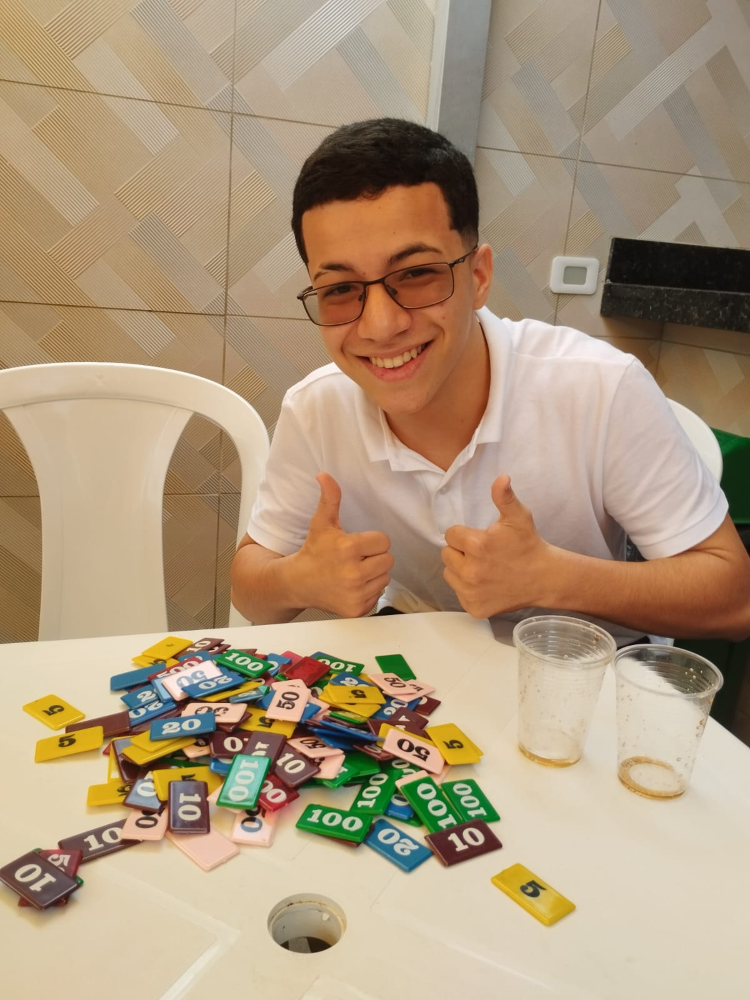

Um dia, seu amigo fala que sabe onde encontrar o segredo pra ganhar sempre no truco, o que vc diz?
ele: ta localizado no pereque mirim
fim do papo
chgando onde seu amigo disse que está localizado o segredo, você acha um papel, está pronto para saber o que ta escrito?

vc decidiu ir dormir, pois ta duro dorme
Nas igrejas de Olinda, você descobre um mapa antigo escondido atrás de um altar, apontando que a próxima pista está no Amazonas.
"só jogar contra o caio que tu ganha todas irmão" estava escrito